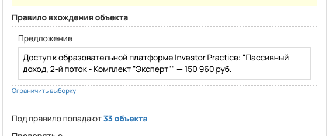

[AMO] Заявки с виджета Пассивный доход, 2-й поток - Комплект "Эксперт"
- ID процесса:
2073398 - Объект: Заказы
- Статус: Ожидание событий
- Внутренняя страница: 2073398. [AMO] Заявки с виджета Пассивный доход, 2-й поток - Комплект "Эксперт"
- GetCourse: Карточка | Схема процесса
Скриншоты процесса

Коротко для заказчика
- Главное: В процесс попадают заказы по правилу: Предложение (ID: 7087051).
- Дальше он передает данные как: Оплаты и заказы.
- Связанных баз Vakas: 1.
Понятное описание процесса
- Процесс работает с объектом GetCourse: Заказы. Текущий статус процесса: Ожидание событий.
- На вход попадают данные так: В процесс попадают заказы по правилу: Предложение (ID: 7087051).
- Дополнительные условия внутри схемы не извлечены: процесс идет напрямую по основной ветке или условия не подписаны.
- Дальше процесс делает прямые вызовы Vakas: 1. Напрямую задействованы базы: 76313.
- Передача: 76313. Заявки с виджета Пассивный доход, 2-й поток - Комплект "Эксперт": Оплаты и заказы. Передаются параметры:
number,id,order_id,positions,costMoney,leftCostMoney,payedMoney,status,paymentLink,firstNameи другие. - Что происходит в amoCRM: На входе в этап ПАССИВНЫЙ ДОХОД -> НОВЫЙ ЗАКАЗ [75466258] база ищет дубль и при необходимости переводит найденную сделку в рабочий этап.
Ход процесса в GetCourse
- Схема состоит из 8 блоков и 10 переходов.
- По типам: стартов 1, условий/ожиданий 0, вызовов URL 3, изменений полей 2, финалов 1.
Блоки процесса: что делают и зачем нужны:
- Блок
35902066«Начало работы» (старт). Что делает: Запускает выполнение схемы для объекта, который попал под правило входа процесса. Зачем нужен: Нужен как точка входа: от него GetCourse начинает движение объекта по схеме. Дальше: если результат «Выполнено», идет в «Вызвать url». - Блок
35902128«Вызвать url» (вызов URL). Что делает: Передает в Vakas: 76313. Заявки с виджета Пассивный доход, 2-й поток - Комплект "Эксперт", канал «Оплаты и заказы» (GET); параметры:number,id,order_id,positions,costMoney,leftCostMoney,payedMoney,status,paymentLink,firstName,lastName,name,email,phoneи другие; timeout 300 сек. Зачем нужен: Нужен, чтобы передать подходящий объект в 76313. Заявки с виджета Пассивный доход, 2-й поток - Комплект "Эксперт"; дальше На входе в этап ПАССИВНЫЙ ДОХОД -> НОВЫЙ ЗАКАЗ [75466258] база ищет дубль и при необходимости переводит найденную сделку в рабочий этап. Дальше: если результат «Ошибка», идет в «n8n fail после Вызвать url #35902128»; если результат «Выполнено», идет в «n8n success после Вызвать url #35902128». - Блок
43524793«n8n success после Вызвать url #35902128» (вызов URL). Что делает: Вызывает внешний URL: testn8n.easydrafting.ru/webhook/gc-vakas-retry-events (POST); параметры:event,clientED,gcDomain,action,process_id,process_name,entity_type,object_id,order_id,user_id,name,email,phone,error_message; timeout 10 сек. Зачем нужен: Нужен, чтобы процесс GetCourse передал данные во внешний сервис testn8n.easydrafting.ru. Дальше: если результат «Ошибка», идет в «error_vakas 0»; если результат «Выполнено», идет в «error_vakas 0». - Блок
43435212«error_vakas 0» (изменение поля). Что делает: меняет полеerror_vakas(Установить равным). значение: 0 Зачем нужен: Нужен, чтобы записать внутри GetCourse технический признак/значение, которое потом используется в передаче или логике ветвления. Дальше: если результат «Выполнено», идет в «Завершение процесса». - Блок
35902134«Завершение процесса» (завершение). Что делает: Завершает ветку процесса после выполненных проверок и действий. Зачем нужен: Нужен, чтобы закрыть текущую ветку и не гонять объект по процессу повторно. Дальше переходов нет: это конечная точка ветки. - Блок
43524794«n8n fail после Вызвать url #35902128» (вызов URL). Что делает: Вызывает внешний URL: testn8n.easydrafting.ru/webhook/gc-vakas-retry-events (POST); параметры:event,clientED,gcDomain,action,process_id,process_name,entity_type,object_id,order_id,user_id,name,email,phone,error_message; timeout 10 сек. Зачем нужен: Нужен, чтобы процесс GetCourse передал данные во внешний сервис testn8n.easydrafting.ru. Дальше: если результат «Ошибка», идет в «Начало работы»; если результат «Выполнено», идет в «Начало работы». - Блок
43435210«error_vakas 1» (изменение поля). Что делает: меняет полеerror_vakas(Установить равным). значение: 1 Зачем нужен: Нужен, чтобы записать внутри GetCourse технический признак/значение, которое потом используется в передаче или логике ветвления. Дальше: если результат «Выполнено», идет в «Задержка». - Блок
43435211«Задержка» (таймер). Что делает: Делает паузу или ждет заданное время перед следующим шагом. Зачем нужен: Нужен для задержки между проверкой и передачей, чтобы данные успели появиться или чтобы соблюсти нужный порядок обработки. Дальше: если результат «Выполнено», идет в «Начало работы».
Что именно входит в процесс
- В процесс попадают заказы по правилу: Предложение (ID: 7087051).
Как именно настроено правило
- Предложение (ID: 7087051)
Куда и как передается дальше
| База Vakas | Что передается | Этап в amoCRM | Что происходит со сделкой |
|---|---|---|---|
| 76313. Заявки с виджета Пассивный доход, 2-й поток - Комплект "Эксперт" | Оплаты и заказы | ПАССИВНЫЙ ДОХОД -> НОВЫЙ ЗАКАЗ [75466258] | На входе в этап ПАССИВНЫЙ ДОХОД -> НОВЫЙ ЗАКАЗ [75466258] база ищет дубль и при необходимости переводит найденную сделку в рабочий этап. |